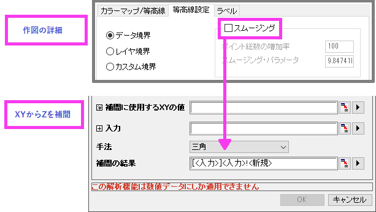
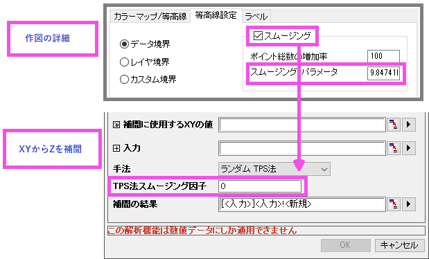

FAQ-1183 等高線図で特定のX/Y値のZデータを取得するにはどうすればよいですか?
Interpolate-Z-From-XY-In-Contour
最終更新日：2023/8/3
XYZ等高線図の指定したXYデータのペアからZ値を取得するには、XYからZを補間ツールを使用できます。
- 解析：数学：XYからZを補間メニューを選択します。
- 開いたダイアログで、
- 補間に使用するXYの値：Z値を計算したいXY列を選択します。
- 入力: 等高線図を作成したXYZ列を選択します。
- 手法:
- 等高線図でスムージングオプションを選択していない場合、手法 = 三角を使用します。
- 
- 等高線図でスムージングオプションを選択した場合、手法 = ランダムTPS法にし、TPS法スムージング因子は等高線図でのスムージング・パラメータと同じにします。
- 
キーワード:補間, コンター値, XYZ等値線, Zを計算